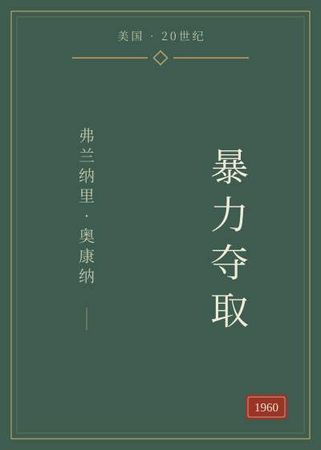
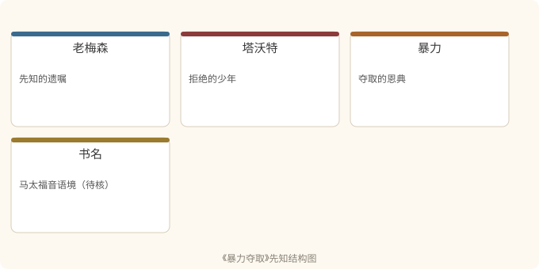

暴力夺取
一、基本信息
| 作者 | 弗兰纳里·奥康纳 |
|---|---|
| 成书/出版 | 1960年（作者页 B291 口径：The Violent Bear It Away (1960)） Flannery OConnor — Encyclopaedia Britannica（百科全书） |
| 国别/地区 | 美国 |
| 时代 | 现当代 · 20世纪 |
| 体裁 | 长篇小说 |
| 语言 | 英语 |

《暴力夺取》先知结构图（主题·结构图）
二、创作背景
作者页（B291）：奥康纳 major_works 载'The Violent Bear It Away (1960)'（B291 作者页定位，详见 haorennanxun 条核对）。
题材（通说待核）：少年塔沃特与叔公老梅森的'先知'使命——世俗教育与先知书的对撞。
三、内容脉络
老梅森去世——塔沃特拒绝先知使命却终被'暴力'夺取（通说待核）。
四、主要人物表
| 人物 | 身份 | 说明 |
|---|---|---|
| 塔沃特 | 少年 | （通说待核） |
| 老梅森 | 叔公 | 先知（通说待核） |
五、主题与艺术特点
- 先知的'暴力'使命（书名通说——出自《马太福音》语境待核）。
- 世俗教育与宗教召唤的对撞（通说待核）。
- 南方哥特（B291 作者级语境）。
六、影响与评论
- 作者页：奥康纳第二部长篇（B291 作者页口径）。
Flannery OConnor — Encyclopaedia Britannica（百科全书） - 作者页：'violence……preparing them to accept their moment of grace'（B291 作者自述）。
Flannery OConnor — Encyclopaedia Britannica（百科全书）
七、阅读建议
难点
- 先知书意象。
- 双重叙事（雷拜与塔沃特）。
- 《暴力夺取》（新星出版社《慧血：奥康纳作品集》，通说待核）。
- 英文原版。
先《慧血》后本作。
八、待核实
- 1960年出版（Farrar, Straus说）核对。
- 塔沃特/老梅森人名核对。
- 书名出处（《马太福音》11:12说）待核。